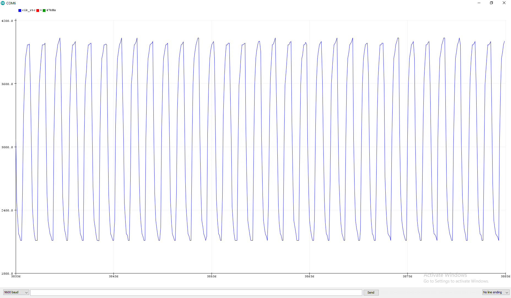

February 25, 2024
The RP2040's ADCs can do 500kS/s, which is a little bit slow. Here is a way to get a 1700% overclock, to 8.5MS/s.
If 4 MS/s is enough for you though, you can just go to this forum post.
Basically, you just need to do the following.
Code: (main.cpp)
#include "stdio.h" #include "pico/stdlib.h" #include "hardware/gpio.h" #include "hardware/clocks.h" #include "hardware/vreg.h" #include "hardware/adc.h" #include "hardware/dma.h" #include "hardware/pwm.h" #include "hardware/pll.h" /* 8.5 MS/s example sets up the ADC, and also generates a test signal (mess with the frequency to ensure its not some aliasing stuff) */ #define SYS_PLL_KHZ (816000) // this needs to be within the range of possible VCO frequencies, seems to break at above 816000 ish #define SYS_DIVIDER 2 // this tends to not work above 2 #define F_SYS_KHZ (SYS_PLL_KHZ / SYS_DIVIDER) #define PWM_FREQ 531000 // can be adjusted #define BUFFER_SIZE 500 #define ADC_PIN 26 #define PWM_PIN 15 uint adc_dma_chan; dma_channel_config adc_dma_cfg; uint pwmSlice; uint16_t buf[BUFFER_SIZE]; void initPWM(uint pin) { gpio_init(pin); gpio_set_function(pin, GPIO_FUNC_PWM); pwmSlice = pwm_gpio_to_slice_num(pin); pwm_set_clkdiv(pwmSlice, 1.0f); gpio_set_function(pin, GPIO_FUNC_PWM); pwm_set_enabled(pwmSlice, true); } void setFreq(uint32_t freq) { uint32_t wrap_val = (uint32_t) F_SYS_KHZ * 1000 / freq; uint16_t wrap = (uint16_t) wrap_val; if (wrap_val > 65535) pwm_set_enabled(pwmSlice, false); else pwm_set_enabled(pwmSlice, true); pwm_set_both_levels(pwmSlice, wrap / 2, wrap / 2); pwm_set_wrap(pwmSlice, wrap); } void initADC() { adc_init(); adc_gpio_init(ADC_PIN); adc_select_input(ADC_PIN - 26); adc_fifo_setup(true, true, 1, false, false); adc_set_clkdiv(1); adc_dma_chan = dma_claim_unused_channel(true); adc_dma_cfg = dma_channel_get_default_config(adc_dma_chan); channel_config_set_transfer_data_size(&adc_dma_cfg, DMA_SIZE_16); channel_config_set_read_increment(&adc_dma_cfg, false); channel_config_set_write_increment(&adc_dma_cfg, true); channel_config_set_dreq(&adc_dma_cfg, DREQ_ADC); } void sampleADC(uint16_t buffer[], size_t size) { adc_fifo_drain(); dma_channel_configure ( adc_dma_chan, &adc_dma_cfg, buffer, &adc_hw->fifo, size, true ); adc_run(true); dma_channel_wait_for_finish_blocking(adc_dma_chan); adc_run(false); } int main() { gpio_init(25); gpio_set_dir(25, GPIO_OUT); vreg_set_voltage(VREG_VOLTAGE_1_30); // move clk_sys and clk_peri onto the usb pll clock_configure(clk_sys, CLOCKS_CLK_SYS_CTRL_SRC_VALUE_CLKSRC_CLK_SYS_AUX, CLOCKS_CLK_SYS_CTRL_AUXSRC_VALUE_CLKSRC_PLL_USB, 48 * MHZ, 48 * MHZ); clock_configure(clk_peri, 0, CLOCKS_CLK_PERI_CTRL_AUXSRC_VALUE_CLK_SYS, 48 * MHZ, 48 * MHZ); // restart pll_sys at a higher frequency pll_deinit(pll_sys); pll_init(pll_sys, 1, 1000 * SYS_PLL_KHZ, 1, 1); // move clk_sys back to pll_sys clock_configure(clk_sys, CLOCKS_CLK_SYS_CTRL_SRC_VALUE_CLKSRC_CLK_SYS_AUX, CLOCKS_CLK_SYS_CTRL_AUXSRC_VALUE_CLKSRC_PLL_SYS, SYS_PLL_KHZ * 1000, SYS_PLL_KHZ * 1000 / SYS_DIVIDER); initADC(); stdio_init_all(); volatile uint32_t* adc_clk_ctrl_reg = (volatile uint32_t*) (CLOCKS_BASE + 0x60); *adc_clk_ctrl_reg = 0x820; // set adc clock source to pll_sys initPWM(PWM_PIN); // generate a test signal setFreq(PWM_FREQ); while(1) { // rekt noob timeam gpio_put(25, 1); sleep_ms(200); gpio_put(25, 0); sleep_ms(1000); sampleADC(buf, BUFFER_SIZE); for (int i = 0; i < BUFFER_SIZE; i++) { printf("%d\n", buf[i]); } uint f_pll_sys = frequency_count_khz(CLOCKS_FC0_SRC_VALUE_PLL_SYS_CLKSRC_PRIMARY); uint f_pll_usb = frequency_count_khz(CLOCKS_FC0_SRC_VALUE_PLL_USB_CLKSRC_PRIMARY); uint f_rosc = frequency_count_khz(CLOCKS_FC0_SRC_VALUE_ROSC_CLKSRC); uint f_clk_sys = frequency_count_khz(CLOCKS_FC0_SRC_VALUE_CLK_SYS); uint f_clk_peri = frequency_count_khz(CLOCKS_FC0_SRC_VALUE_CLK_PERI); uint f_clk_usb = frequency_count_khz(CLOCKS_FC0_SRC_VALUE_CLK_USB); uint f_clk_adc = frequency_count_khz(CLOCKS_FC0_SRC_VALUE_CLK_ADC); uint f_clk_rtc = frequency_count_khz(CLOCKS_FC0_SRC_VALUE_CLK_RTC); printf("pll_sys = %dkHz\n", f_pll_sys); printf("pll_usb = %dkHz\n", f_pll_usb); printf("rosc = %dkHz\n", f_rosc); printf("clk_sys = %dkHz\n", f_clk_sys); printf("clk_peri = %dkHz\n", f_clk_peri); printf("clk_usb = %dkHz\n", f_clk_usb); printf("clk_adc = %dkHz\n", f_clk_adc); printf("clk_rtc = %dkHz\n\n\n\n", f_clk_rtc); } }
CMakeLists.txt: (The only difference here is setting the QSPI clock divider to 4, since the W25 flash IC is not fast enough)
cmake_minimum_required(VERSION 3.21) include(pico_sdk_import.cmake) project(pico-adc-overclock C CXX ASM) set(CMAKE_C_STANDARD 11) set(CMAKE_CXX_STANDARD 20) pico_sdk_init() add_executable(${PROJECT_NAME} main.cpp ) target_link_libraries(${PROJECT_NAME} pico_stdlib pico_multicore hardware_gpio hardware_clocks hardware_vreg hardware_dma hardware_adc hardware_pwm hardware_pll ) pico_enable_stdio_usb(${PROJECT_NAME} 1) pico_enable_stdio_uart(${PROJECT_NAME} 0) pico_add_extra_outputs(${PROJECT_NAME}) pico_define_boot_stage2(pico-coremark-div4 ${PICO_DEFAULT_BOOT_STAGE2_FILE}) # three lines required for overclock of over 266 MHz target_compile_definitions(pico-coremark-div4 PRIVATE PICO_FLASH_SPI_CLKDIV=4) pico_set_boot_stage2(${PROJECT_NAME} pico-coremark-div4)
This is what the RP2040 clock frequency counter shows.
Firstly, the high VREG voltage and high clock speed could damage the pico, or reduce its lifespan. In addition, the ADC has some problems of its own.
For context, heres the test signal that I was measuring. (Apologies for the poor quality image)
And this is what the pico measures at a reduced sample rate of 7 MS/s.
There is a terrible distortion at half the input voltage range, and at the full, 8.5 MS/s, the bottom half gets cut off entirely. This was mentioned in this other forum post, but essentially, a crude solution to this problem is to just discard the bottom half of the readings, and only use the readings which are greater than 1.65V.
After doing this, I was able to get some slightly better readings.
The CPU clock is essentially maxed out at around 400ish MHz, and any higher would require increased VREG voltage, above what it can normally supply. It would also severely impact the lifespan of the chip, and it would also need cooling for it to not overheat. Doing all this seems a bit excessive, and at that point, it would probably be better to just use a dedicated ADC or a faster microcontroller.
From my experiments, the ADC/DMA doesn't really work if the ADC clock is more than 2x the system clock, and seeing that the ADC is having other issues at such high sample rates, I do think that 8-9MS/s is the limit for the pico's ADC.